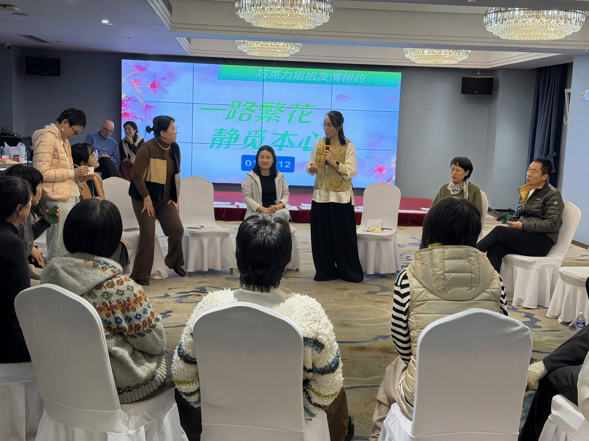

COURSE FOUNDER
Michel Claeys Michel Claeys Bouuaert
Belgian psychotherapist and founder of Essence Therapy. His long-standing work in emotional education, counseling and experiential training shapes the course and its teaching.
Meet Michel Claeys ↗EQ TRAINERS · A SHARED PRACTICE
Growing from two training stages in Beijing, the alliance brings emotional awareness, communication and experiential education into classrooms and groups.
THE COMMUNITY
The 2026 Beijing trainer course had two stages. Level I in August focused on personal experience and observing teaching methods. Level II in November moved toward participant-designed, participant-led sessions. The team is now discussing with members how to continue this work in education, family and group settings.
The alliance continues this shared learning. It draws on real classroom experience, reflects on practice and develops more mature ways of facilitating through collaboration.
FROM THE CLASSROOM
Experiencing, observing, designing and facilitating form a continuous learning process.



PEOPLE IN PRACTICE
Teaching and classroom practice meet as facilitation skills develop through repeated design and feedback.
Belgian psychotherapist and founder of Essence Therapy. His long-standing work in emotional education, counseling and experiential training shapes the course and its teaching.
Meet Michel Claeys ↗
Ni Nanqi has long translated and introduced Michel's books in Chinese and collaborated on courses, connecting the written method with Chinese learning settings while continuing to teach Essence Therapy.
Get to know Ni Nanqi ↗In Level II, 22 participants each designed and led a themed session of about 90 minutes. Their themes ranged from recognizing emotions to close relationships, family, trust, cooperation and self-connection. Different professional experiences met and challenged one another in the same classroom.
Recognizing feelings, needs and bodily signals.
Practising communication in close relationships and groups.
Helping participants experience support and co-creation through activities.
Exploring parenting, life stages and responsibility.
WORK IN PROGRESS
Learning continues in different forms. Each project begins with real participation and a clearly observed need.
Drawing on Level II facilitation, the group is organizing session designs, observations and feedback to keep refining classroom practice.
Invite willing members to share their learning paths, professional backgrounds and facilitation experience so that different practitioners can be heard.
The group is researching the distinct needs of parents and young people and co-designing experiential activities. Format and timing are still being developed.